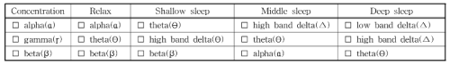

주파수와 수면의 질의 관계
수면 단계별 뇌파 변화
-
주파수 변화
감마파 → 베타파 → 알파파 → 세타파 → 델타파 순으로 갈수록 뇌파 주파수가 느려진다. -
수면 깊이
깊은 수면일수록 세타파와 델타파 같은 느린 주파수 비율이 높아진다. -
정밀 평가
델타파를 두 구간으로 나누어 수면의 깊이를 보다 세밀하게 분석할 수 있다. -
수면 유도 음향
빠른 각성 상태의 뇌파를 느린 이완 상태 뇌파로 전환시키는 데 효과적이다.
인공 주파수 자극의 개념

수면 유도 음향 카테고리
사람은 수면 시 각성 → 1단계 → 2단계 → 3단계 → REM 단계로 순차적으로 변화하며, 각 단계에서 뇌파 패턴이 달라진다. 이를 기반으로 수면을 유도하기 위해 목표 뇌파 상태를 설정하고, 해당 상태에 맞는 음향을 제공할 수 있다.
카테고리별 전환 예시
- 집중(Concentration): 감마파와 베타파 감소, 알파파 유도
- 이완(Relax): 알파파와 세타파 유도
- Shallow Sleep: 세타파 중심
- Deep Sleep: 델타파와 극서파 중심
유도 과정
- 집중 → 이완 → 얕은 수면 → 깊은 수면으로 단계별로 음향 제공
- 각 단계에서 목표 뇌파 상태를 만들어 주어 수면 깊이를 자연스럽게 향상
즉, 뇌파 기반 음향 자극을 통해 사용자의 뇌를 각 단계에 맞게 유도하면 보다 효율적인 수면 유도가 가능하다.